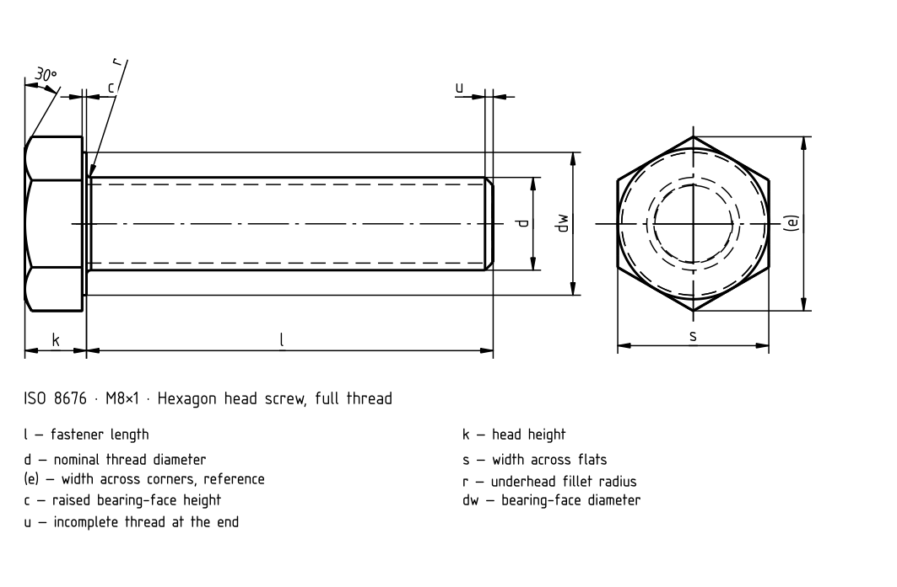

Fine full thread

Fine full thread · ISO 8676 · Standards context
| Item | Value |
|---|---|
| Standards context | ISO 8676:2022 |
| Product grade | A/B |
| Property class | The complete standard is needed to verify dimensions, tolerances and all conditions. |
Fine full thread
Historical source; numeric values and exceptions have not been fully verified against the current standard.
| d | a _max. | a _min. | c _max. | c _min. | d _a max. | d _w min. | d _w min. | e _min. | e _min. | s _max. | s _min. | s _min. | k | Δk | Δk | r _min. | d _w min. [B] | e _min. [B] | s _min. [B] | Δk [B] |
|---|---|---|---|---|---|---|---|---|---|---|---|---|---|---|---|---|---|---|---|---|
| M8×1 | 3 | 1 | 0.6 | 0.15 | 9.2 | 11.63 | – | 14.38 | – | 13 | 12.73 | – | 5.3 | 0.15 | – | 0.4 | — | — | — | — |
| M10×1 | 3 | 1 | 0.6 | 0.15 | 11.2 | 14.63 | – | 17.77 | – | 16 | 15.73 | – | 6.4 | 0.18 | – | 0.4 | — | — | — | — |
| (M10×1,25) | 4 | 1.25 | 0.6 | 0.15 | 11.2 | 14.63 | – | 17.77 | – | 16 | 15.73 | – | 6.4 | 0.18 | – | 0.4 | — | — | — | — |
| (M12×1,25) | 4 | 1.25 | 0.6 | 0.15 | 13.7 | 16.63 | – | 20.03 | – | 18 | 17.73 | – | 7.5 | 0.18 | – | 0.6 | — | — | — | — |
| M12×1,5 | 4.5 | 1.5 | 0.6 | 0.15 | 13.7 | 16.63 | – | 20.03 | – | 18 | 17.73 | – | 7.5 | 0.18 | – | 0.6 | — | — | — | — |
| (M14×1,5) | 4.5 | 1.5 | 0.6 | 0.15 | 15.7 | 19.37 | – | 23.36 | – | 21 | 20.67 | – | 8.8 | 0.18 | – | 0.6 | — | — | — | — |
| M16×1,5 | 4.5 | 1.5 | 0.8 | 0.2 | 17.7 | 22.49 | 22 [B] | 26.75 | 26.17 [B] | 24 | 23.67 | 23.16 [B] | 10 | 0.18 | 0.29 [B] | 0.6 | — | — | — | — |
| M18×1,5 | 4.5 | 1.5 | 0.8 | 0.2 | 20.2 | 25.34 | 24.85 [B] | 30.14 | 29.56 [B] | 27 | 26.67 | 26.16 [B] | 11.5 | 0.215 | 0.35 [B] | 0.6 | — | — | — | — |
| M20×1,5 | 6 | 2 | 0.8 | 0.2 | 22.4 | 28.19 | 27.7 [B] | 33.53 | 32.95 [B] | 30 | 29.67 | 29.16 [B] | 12.5 | 0.215 | 0.35 [B] | 0.8 | — | — | — | — |
| (M20×2) | 4.5 | 1.5 | 0.8 | 0.2 | 22.4 | 28.19 | 27.7 [B] | 33.53 | 32.95 [B] | 30 | 29.67 | 29.16 [B] | 12.5 | 0.215 | 0.35 [B] | 0.8 | — | — | — | — |
| (M22×1,5) | 4.5 | 1.5 | 0.8 | 0.2 | 24.4 | 31.71 | 31.35 [B] | 37.72 | 37.29 [B] | 34 | 33.38 | 33 [B] | 14 | 0.215 | 0.35 [B] | 0.8 | — | — | — | — |
| M24×2 | 6 | 2 | 0.8 | 0.2 | 26.4 | 33.61 | 33.25 [B] | 39.98 | 39.55 [B] | 36 | 35.38 | 35 [B] | 15 | 0.215 | 0.35 [B] | 0.8 | — | — | — | — |
| (M27×2) | 6 | 2 | 0.8 | 0.2 | 30.4 | – | 38 [B] | – | 45.2 [B] | 41 | – | 40 [B] | 17 | – | 0.35 [B] | 1 | — | — | — | — |
| M30×2 | 6 | 2 | 0.8 | 0.2 | 33.4 | – | 42.75 [B] | – | 50.85 [B] | 46 | – | 45 [B] | 18.7 | – | 0.42 [B] | 1 | — | — | — | — |
| (M18×1,5) | 4.5 | 1.5 | 0.8 | 0.2 | 20.2 | 25.34 | 24.85 [B] | 30.14 | 29.56 [B] | 27 | 26.67 | 26.16 [B] | 11.5 | 0.215 | 0.35 [B] | 0.6 | — | — | — | — |
| M22×1,5 | 4.5 | 1.5 | 0.8 | 0.2 | 24.4 | 31.71 | 31.35 [B] | 37.72 | 37.29 [B] | 34 | 33.38 | 33 [B] | 14 | 0.215 | 0.35 [B] | 0.8 | — | — | — | — |
| M30×2 | 6 | 2 | 0.8 | 0.2 | 33.4 | – | 42.75 [B] | – | 50.85 [B] | 46 | – | 45 [B] | 18.7 | – | 0.2 [B] | 1 | — | — | — | — |
| (M33×2) | 1 | 2 | 0.8 | 0.2 | 36.4 | — | — | — | — | 50 | — | — | 21 | — | — | 1 | 46.55 [B] | 55.37 [B] | 49 [B] | 0.42 [B] |
| M36×3 | 9 | 3 | 0.8 | 0.2 | 39.4 | — | — | — | — | 55 | — | — | 22.5 | — | — | 1 | 51.11 [B] | 60.79 [B] | 53.8 [B] | 0.42 [B] |
| (M39×3) | 9 | 3 | 1 | 0.3 | 42.4 | — | — | — | — | 60 | — | — | 25 | — | — | 1 | 55.86 [B] | 66.44 [B] | 58.8 [B] | 0.42 [B] |
| M42×3 | 9 | 3 | 1 | 0.3 | 45.6 | — | — | — | — | 65 | — | — | 26 | — | — | 1.2 | 59.95 [B] | 71.3 [B] | 63.1 [B] | 0.42 [B] |
| (M45×3) | 9 | 3 | 1 | 0.3 | 48.6 | — | — | — | — | 70 | — | — | 28 | — | — | 1.2 | 64.7 [B] | 76.95 [B] | 68.1 [B] | 0.42 [B] |
| M48×3 | 9 | 3 | 1 | 0.3 | 52.6 | — | — | — | — | 75 | — | — | 30 | — | — | 1.6 | 69.45 [B] | 82.6 [B] | 73.1 [B] | 0.42 [B] |
| M52×4 | 12 | 4 | 1 | 0.3 | 56.6 | — | — | — | — | 80 | — | — | 33 | — | — | 1.6 | 74.2 [B] | 88.25 [B] | 78.1 [B] | 0.5 [B] |
| M56×4 | 12 | 4 | 1 | 0.3 | 63 | — | — | — | — | 85 | — | — | 35 | — | — | 2 | 78.66 [B] | 93.56 [B] | 82.8 [B] | 0.5 [B] |
| (M60×4) | 12 | 4 | 1 | 0.3 | 67 | — | — | — | — | 90 | — | — | 38 | — | — | 2 | 83.41 [B] | 99.21 [B] | 87.8 [B] | 0.5 [B] |
| M64×4) | 12 | 4 | 1 | 0.3 | 71 | — | — | — | — | 95 | — | — | 40 | — | — | 2 | 88.16 [B] | 104.86 [B] | 92.8 [B] | 0.5 [B] |
Fine full thread · ISO 8676 · SIZES · Lengths and combinations
Historical source; numeric values and exceptions have not been fully verified against the current standard.
| l | Δl | Δl | M8×1 | M10×1 | (M10×1,25) | (M12×1,25) | M12×1,5 | (M14×1,5) | M16×1,5 |
|---|---|---|---|---|---|---|---|---|---|
| 16 | 0.35 | – | + | — | — | — | — | — | — |
| 20 | 0.42 | – | + | + | + | — | — | — | — |
| 25 | 0.42 | – | + | + | + | + | + | — | — |
| 30 | 0.42 | – | + | + | + | + | + | + | — |
| 35 | 0.5 | – | + | + | + | + | + | + | + |
| 40 | 0.5 | 1.25 [B] | + | + | + | + | + | + | + |
| 45 | 0.5 | 1.25 [B] | + | + | + | + | + | + | + |
| 50 | 0.5 | 1.25 [B] | + | + | + | + | + | + | + |
| 55 | 0.6 | 1.5 [B] | + | + | + | + | + | + | + |
| 60 | 0.6 | 1.5 [B] | + | + | + | + | + | + | + |
| 65 | 0.6 | 1.5 [B] | + | + | + | + | + | + | + |
| 70 | 0.6 | 1.5 [B] | + | + | + | + | + | + | + |
| 80 | 0.6 | 1.5 [B] | + | + | + | + | + | + | + |
| 90 | 0.7 | 1.75 [B] | — | + | + | + | + | + | + |
| 100 | 0.7 | 1.75 [B] | — | + | + | + | + | + | + |
| 110 | 0.7 | 1.75 [B] | — | — | — | + | + | + | + |
| 120 | 0.7 | 1.75 [B] | — | — | — | + | + | + | + |
| 130 | 0.8 | 2 [B] | — | — | — | — | — | + | + |
| 140 | 0.8 | 2 [B] | — | — | — | — | — | + | + |
| 150 | 0.8 | 2 [B] | — | — | — | — | — | — | + |
| 160 | – | 2 [B] | — | — | — | — | — | — | + |
| 180 | – | 2 [B] | — | — | — | — | — | — | — |
Fine full thread · ISO 8676 · SIZES-02 · Lengths and combinations
Historical source; numeric values and exceptions have not been fully verified against the current standard.
| l | Δl | Δl | M18×1,5 | M20×1,5 | (M20×2) | (M22×1,5) | M24×2 | (M27×2) | M30×2 |
|---|---|---|---|---|---|---|---|---|---|
| 30 | 0.42 | – | — | — | — | — | — | — | — |
| 35 | 0.5 | – | + | — | — | — | — | — | — |
| 40 | 0.5 | 1.25 [B] | + | + | + | — | + | — | + [B] |
| 45 | 0.5 | 1.25 [B] | + | + | + | + | + | — | + [B] |
| 50 | 0.5 | 1.25 [B] | + | + | + | + | + | — | + [B] |
| 55 | 0.6 | 1.5 [B] | + | + | + | + | + | + [B] | + [B] |
| 60 | 0.6 | 1.5 [B] | + | + | + | + | + | + [B] | + [B] |
| 65 | 0.6 | 1.5 [B] | + | + | + | + | + | + [B] | + [B] |
| 70 | 0.6 | 1.5 [B] | + | + | + | + | + | + [B] | + [B] |
| 80 | 0.6 | 1.5 [B] | + | + | + | + | + | + [B] | + [B] |
| 90 | 0.7 | 1.75 [B] | + | + | + | + | + | + [B] | + [B] |
| 100 | 0.7 | 1.75 [B] | + | + | + | + | + | + [B] | + [B] |
| 110 | 0.7 | 1.75 [B] | + | + | + | + | + | + [B] | + [B] |
| 120 | 0.7 | 1.75 [B] | + | + | + | + | + | + [B] | + [B] |
| 130 | 0.8 | 2 [B] | + | + | + | + | + | + [B] | + [B] |
| 140 | 0.8 | 2 [B] | + | + | + | + | + | + [B] | + [B] |
| 150 | 0.8 | 2 [B] | + | + | + | + | + | + [B] | + [B] |
| 160 | – | 2 [B] | + [B] | + [B] | + [B] | + [B] | + [B] | + [B] | + [B] |
| 180 | – | 2 [B] | + [B] | + [B] | + [B] | + [B] | + [B] | + [B] | + [B] |
| 200 | – | 2.3 [B] | — | + [B] | + [B] | + [B] | + [B] | + [B] | + [B] |
| 220 | – | 2.3 [B] | — | — | — | + [B] | — | + [B] | — |
| 240 | – | 2.3 [B] | — | — | — | — | — | + [B] | — |
| 260 | – | 2.6 [B] | — | — | — | — | — | + [B] | — |
| 280 | – | 2.6 [B] | — | — | — | — | — | — | — |
Fine full thread · ISO 8676 · SIZES · Lengths and combinations
Historical source; numeric values and exceptions have not been fully verified against the current standard.
| l | Δl | Δl | (M18×1,5) | M20×1,5 | (M20×2) | M22×1,5 | M24×2 | (M27×2) | M30×2 |
|---|---|---|---|---|---|---|---|---|---|
| 30 | 0.42 | – | — | — | — | — | — | — | — |
| 35 | 0.5 | – | + | — | — | — | — | — | — |
| 40 | 0.5 | 1.25 [B] | + | + | + | — | + | — | + [B] |
| 45 | 0.5 | 1.25 [B] | + | + | + | + | + | — | + [B] |
| 50 | 0.5 | 1.25 [B] | + | + | + | + | + | — | + [B] |
| 55 | 0.6 | 1.5 [B] | + | + | + | + | + | + [B] | + [B] |
| 60 | 0.6 | 1.5 [B] | + | + | + | + | + | + [B] | + [B] |
| 65 | 0.6 | 1.5 [B] | + | + | + | + | + | + [B] | + [B] |
| 70 | 0.6 | 1.5 [B] | + | + | + | + | + | + [B] | + [B] |
| 80 | 0.6 | 1.5 [B] | + | + | + | + | + | + [B] | + [B] |
| 90 | 0.7 | 1.75 [B] | + | + | + | + | + | + [B] | + [B] |
| 100 | 0.7 | 1.75 [B] | + | + | + | + | + | + [B] | + [B] |
| 110 | 0.7 | 1.75 [B] | + | + | + | + | + | + [B] | + [B] |
| 120 | 0.7 | 1.75 [B] | + | + | + | + | + | + [B] | + [B] |
| 130 | 0.8 | 2 [B] | + | + | + | + | + | + [B] | + [B] |
| 140 | 0.8 | 2 [B] | + | + | + | + | + | + [B] | + [B] |
| 150 | 0.8 | 2 [B] | + | + | + | + | + | + [B] | + [B] |
| 160 | – | 2 [B] | + [B] | + [B] | + [B] | + [B] | + [B] | + [B] | + [B] |
| 180 | – | 2 [B] | + [B] | + [B] | + [B] | + [B] | + [B] | + [B] | + [B] |
| 200 | – | 2.3 [B] | — | + [B] | + [B] | + [B] | + [B] | + [B] | + [B] |
| 220 | – | 2.3 [B] | — | — | — | + [B] | — | + [B] | — |
| 240 | – | 2.3 [B] | — | — | — | — | — | + [B] | — |
| 260 | – | 2.6 [B] | — | — | — | — | — | + [B] | — |
| 280 | – | 2.6 [B] | — | — | — | — | — | — | — |
Fine full thread · ISO 8676 · SIZES · Lengths and combinations
Historical source; numeric values and exceptions have not been fully verified against the current standard.
| l | Δl | Δl | (M33×2) | M36×3 | (M39×3) | M42×3 | (M45×3) | M48×3 | M52×4 |
|---|---|---|---|---|---|---|---|---|---|
| 40 | 0.5 | 1.25 [B] | — | + [B] | — | — | — | — | — |
| 45 | 0.5 | 1.25 [B] | — | + [B] | — | — | — | — | — |
| 50 | 0.5 | 1.25 [B] | — | + [B] | — | — | — | — | — |
| 55 | 0.6 | 1.5 [B] | — | + [B] | — | — | — | — | — |
| 60 | 0.6 | 1.5 [B] | — | + [B] | — | — | — | — | — |
| 65 | 0.6 | 1.5 [B] | + [B] | + [B] | — | — | — | — | — |
| 70 | 0.6 | 1.5 [B] | + [B] | + [B] | — | — | — | — | — |
| 80 | 0.6 | 1.5 [B] | + [B] | + [B] | + [B] | — | — | — | — |
| 90 | 0.7 | 1.75 [B] | + [B] | + [B] | + [B] | + [B] | + [B] | — | — |
| 100 | 0.7 | 1.75 [B] | + [B] | + [B] | + [B] | + [B] | + [B] | + [B] | + [B] |
| 110 | 0.7 | 1.75 [B] | + [B] | + [B] | + [B] | + [B] | + [B] | + [B] | + [B] |
| 120 | 0.7 | 1.75 [B] | + [B] | + [B] | + [B] | + [B] | + [B] | + [B] | + [B] |
| 130 | 0.8 | 2 [B] | + [B] | + [B] | + [B] | + [B] | + [B] | + [B] | + [B] |
| 140 | 0.8 | 2 [B] | + [B] | + [B] | + [B] | + [B] | + [B] | + [B] | + [B] |
| 150 | 0.8 | 2 [B] | + [B] | + [B] | + [B] | + [B] | + [B] | + [B] | + [B] |
| 160 | – | 2 [B] | + [B] | + [B] | + [B] | + [B] | + [B] | + [B] | + [B] |
| 180 | – | 2 [B] | + [B] | + [B] | + [B] | + [B] | + [B] | + [B] | + [B] |
| 200 | – | 2.3 [B] | + [B] | + [B] | + [B] | + [B] | + [B] | + [B] | + [B] |
| 220 | – | 2.3 [B] | + [B] | — | + [B] | + [B] | + [B] | + [B] | + [B] |
| 240 | – | 2.3 [B] | + [B] | — | + [B] | + [B] | + [B] | + [B] | + [B] |
| 260 | – | 2.6 [B] | + [B] | — | + [B] | + [B] | + [B] | + [B] | + [B] |
| 280 | – | 2.6 [B] | + [B] | — | + [B] | + [B] | + [B] | + [B] | + [B] |
| 300 | – | 2.6 [B] | + [B] | — | + [B] | + [B] | + [B] | + [B] | + [B] |
| 320 | – | 2.85 [B] | + [B] | — | + [B] | + [B] | + [B] | + [B] | + [B] |
| 340 | – | 2.85 [B] | + [B] | — | + [B] | + [B] | + [B] | + [B] | + [B] |
| 360 | – | 2.85 [B] | + [B] | — | + [B] | + [B] | + [B] | + [B] | + [B] |
| 380 | – | 2.85 [B] | — | — | + [B] | + [B] | + [B] | + [B] | + [B] |
| 400 | – | 2.85 [B] | — | — | — | + [B] | + [B] | + [B] | + [B] |
| 420 | – | 3.15 [B] | — | — | — | + [B] | + [B] | + [B] | + [B] |
| 440 | – | 3.15 [B] | — | — | — | — | + [B] | + [B] | + [B] |
| 460 | – | 3.15 [B] | — | — | — | — | — | + [B] | + [B] |
| 480 | – | 3.15 [B] | — | — | — | — | — | + [B] | + [B] |
| 500 | – | 3.15 [B] | — | — | — | — | — | — | + [B] |
Fine full thread · ISO 8676 · SIZES · Lengths and combinations
Historical source; numeric values and exceptions have not been fully verified against the current standard.
| l | Δl | Δl | M56×4 | (M60×4) | M64×4) |
|---|---|---|---|---|---|
| 110 | 0.7 | 1.75 [B] | — | — | — |
| 120 | 0.7 | 1.75 [B] | + [B] | + [B] | — |
| 130 | 0.8 | 2 [B] | + [B] | + [B] | + [B] |
| 140 | 0.8 | 2 [B] | + [B] | + [B] | + [B] |
| 150 | 0.8 | 2 [B] | + [B] | + [B] | + [B] |
| 160 | – | 2 [B] | + [B] | + [B] | + [B] |
| 180 | – | 2 [B] | + [B] | + [B] | + [B] |
| 200 | – | 2.3 [B] | + [B] | + [B] | + [B] |
| 220 | – | 2.3 [B] | + [B] | + [B] | + [B] |
| 240 | – | 2.3 [B] | + [B] | + [B] | + [B] |
| 260 | – | 2.6 [B] | + [B] | + [B] | + [B] |
| 280 | – | 2.6 [B] | + [B] | + [B] | + [B] |
| 300 | – | 2.6 [B] | + [B] | + [B] | + [B] |
| 320 | – | 2.85 [B] | + [B] | + [B] | + [B] |
| 340 | – | 2.85 [B] | + [B] | + [B] | + [B] |
| 340 | – | 2.85 [B] | + [B] | + [B] | + [B] |
| 360 | – | 2.85 [B] | + [B] | + [B] | + [B] |
| 380 | – | 2.85 [B] | + [B] | + [B] | + [B] |
| 400 | – | 2.85 [B] | + [B] | + [B] | + [B] |
| 420 | – | 3.15 [B] | + [B] | + [B] | + [B] |
| 440 | – | 3.15 [B] | + [B] | + [B] | + [B] |
| 460 | – | 3.15 [B] | + [B] | + [B] | + [B] |
| 480 | – | 3.15 [B] | + [B] | + [B] | + [B] |
| 500 | – | 3.15 [B] | + [B] | + [B] | + [B] |
Fine full thread · ISO 8676 · Standards context
| Item | Value |
|---|---|
| Standards context | ISO 8676:2022 |
| Product grade | A/B |
| Property class | The complete standard is needed to verify dimensions, tolerances and all conditions. |
Fine full thread
Historical source; numeric values and exceptions have not been fully verified against the current standard.
| d | a _max. | a _min. | c _max. | c _min. | d _a max. | d _w min. |
|---|---|---|---|---|---|---|
| M8×1 | 3 | 1 | 0.6 | 0.15 | 9.2 | 11.63 |
| M10×1 | 3 | 1 | 0.6 | 0.15 | 11.2 | 14.63 |
| (M10×1,25) | 4 | 1.25 | 0.6 | 0.15 | 11.2 | 14.63 |
| (M12×1,25) | 4 | 1.25 | 0.6 | 0.15 | 13.7 | 16.63 |
| M12×1,5 | 4.5 | 1.5 | 0.6 | 0.15 | 13.7 | 16.63 |
| (M14×1,5) | 4.5 | 1.5 | 0.6 | 0.15 | 15.7 | 19.37 |
| M16×1,5 | 4.5 | 1.5 | 0.8 | 0.2 | 17.7 | 22.49 |
| M18×1,5 | 4.5 | 1.5 | 0.8 | 0.2 | 20.2 | 25.34 |
| M20×1,5 | 6 | 2 | 0.8 | 0.2 | 22.4 | 28.19 |
| (M20×2) | 4.5 | 1.5 | 0.8 | 0.2 | 22.4 | 28.19 |
| (M22×1,5) | 4.5 | 1.5 | 0.8 | 0.2 | 24.4 | 31.71 |
| M24×2 | 6 | 2 | 0.8 | 0.2 | 26.4 | 33.61 |
| (M27×2) | 6 | 2 | 0.8 | 0.2 | 30.4 | – |
| M30×2 | 6 | 2 | 0.8 | 0.2 | 33.4 | – |
| (M18×1,5) | 4.5 | 1.5 | 0.8 | 0.2 | 20.2 | 25.34 |
| M22×1,5 | 4.5 | 1.5 | 0.8 | 0.2 | 24.4 | 31.71 |
| M30×2 | 6 | 2 | 0.8 | 0.2 | 33.4 | – |
| (M33×2) | 1 | 2 | 0.8 | 0.2 | 36.4 | — |
| M36×3 | 9 | 3 | 0.8 | 0.2 | 39.4 | — |
| (M39×3) | 9 | 3 | 1 | 0.3 | 42.4 | — |
| M42×3 | 9 | 3 | 1 | 0.3 | 45.6 | — |
| (M45×3) | 9 | 3 | 1 | 0.3 | 48.6 | — |
| M48×3 | 9 | 3 | 1 | 0.3 | 52.6 | — |
| M52×4 | 12 | 4 | 1 | 0.3 | 56.6 | — |
| M56×4 | 12 | 4 | 1 | 0.3 | 63 | — |
| (M60×4) | 12 | 4 | 1 | 0.3 | 67 | — |
| M64×4) | 12 | 4 | 1 | 0.3 | 71 | — |
Fine full thread
Historical source; numeric values and exceptions have not been fully verified against the current standard.
| d | d _w min. | e _min. | e _min. | s _max. | s _min. | s _min. |
|---|---|---|---|---|---|---|
| M8×1 | – | 14.38 | – | 13 | 12.73 | – |
| M10×1 | – | 17.77 | – | 16 | 15.73 | – |
| (M10×1,25) | – | 17.77 | – | 16 | 15.73 | – |
| (M12×1,25) | – | 20.03 | – | 18 | 17.73 | – |
| M12×1,5 | – | 20.03 | – | 18 | 17.73 | – |
| (M14×1,5) | – | 23.36 | – | 21 | 20.67 | – |
| M16×1,5 | 22 [B] | 26.75 | 26.17 [B] | 24 | 23.67 | 23.16 [B] |
| M18×1,5 | 24.85 [B] | 30.14 | 29.56 [B] | 27 | 26.67 | 26.16 [B] |
| M20×1,5 | 27.7 [B] | 33.53 | 32.95 [B] | 30 | 29.67 | 29.16 [B] |
| (M20×2) | 27.7 [B] | 33.53 | 32.95 [B] | 30 | 29.67 | 29.16 [B] |
| (M22×1,5) | 31.35 [B] | 37.72 | 37.29 [B] | 34 | 33.38 | 33 [B] |
| M24×2 | 33.25 [B] | 39.98 | 39.55 [B] | 36 | 35.38 | 35 [B] |
| (M27×2) | 38 [B] | – | 45.2 [B] | 41 | – | 40 [B] |
| M30×2 | 42.75 [B] | – | 50.85 [B] | 46 | – | 45 [B] |
| (M18×1,5) | 24.85 [B] | 30.14 | 29.56 [B] | 27 | 26.67 | 26.16 [B] |
| M22×1,5 | 31.35 [B] | 37.72 | 37.29 [B] | 34 | 33.38 | 33 [B] |
| M30×2 | 42.75 [B] | – | 50.85 [B] | 46 | – | 45 [B] |
| (M33×2) | — | — | — | 50 | — | — |
| M36×3 | — | — | — | 55 | — | — |
| (M39×3) | — | — | — | 60 | — | — |
| M42×3 | — | — | — | 65 | — | — |
| (M45×3) | — | — | — | 70 | — | — |
| M48×3 | — | — | — | 75 | — | — |
| M52×4 | — | — | — | 80 | — | — |
| M56×4 | — | — | — | 85 | — | — |
| (M60×4) | — | — | — | 90 | — | — |
| M64×4) | — | — | — | 95 | — | — |
Fine full thread
Historical source; numeric values and exceptions have not been fully verified against the current standard.
| d | k | Δk | Δk | r _min. | d _w min. [B] | e _min. [B] |
|---|---|---|---|---|---|---|
| M8×1 | 5.3 | 0.15 | – | 0.4 | — | — |
| M10×1 | 6.4 | 0.18 | – | 0.4 | — | — |
| (M10×1,25) | 6.4 | 0.18 | – | 0.4 | — | — |
| (M12×1,25) | 7.5 | 0.18 | – | 0.6 | — | — |
| M12×1,5 | 7.5 | 0.18 | – | 0.6 | — | — |
| (M14×1,5) | 8.8 | 0.18 | – | 0.6 | — | — |
| M16×1,5 | 10 | 0.18 | 0.29 [B] | 0.6 | — | — |
| M18×1,5 | 11.5 | 0.215 | 0.35 [B] | 0.6 | — | — |
| M20×1,5 | 12.5 | 0.215 | 0.35 [B] | 0.8 | — | — |
| (M20×2) | 12.5 | 0.215 | 0.35 [B] | 0.8 | — | — |
| (M22×1,5) | 14 | 0.215 | 0.35 [B] | 0.8 | — | — |
| M24×2 | 15 | 0.215 | 0.35 [B] | 0.8 | — | — |
| (M27×2) | 17 | – | 0.35 [B] | 1 | — | — |
| M30×2 | 18.7 | – | 0.42 [B] | 1 | — | — |
| (M18×1,5) | 11.5 | 0.215 | 0.35 [B] | 0.6 | — | — |
| M22×1,5 | 14 | 0.215 | 0.35 [B] | 0.8 | — | — |
| M30×2 | 18.7 | – | 0.2 [B] | 1 | — | — |
| (M33×2) | 21 | — | — | 1 | 46.55 [B] | 55.37 [B] |
| M36×3 | 22.5 | — | — | 1 | 51.11 [B] | 60.79 [B] |
| (M39×3) | 25 | — | — | 1 | 55.86 [B] | 66.44 [B] |
| M42×3 | 26 | — | — | 1.2 | 59.95 [B] | 71.3 [B] |
| (M45×3) | 28 | — | — | 1.2 | 64.7 [B] | 76.95 [B] |
| M48×3 | 30 | — | — | 1.6 | 69.45 [B] | 82.6 [B] |
| M52×4 | 33 | — | — | 1.6 | 74.2 [B] | 88.25 [B] |
| M56×4 | 35 | — | — | 2 | 78.66 [B] | 93.56 [B] |
| (M60×4) | 38 | — | — | 2 | 83.41 [B] | 99.21 [B] |
| M64×4) | 40 | — | — | 2 | 88.16 [B] | 104.86 [B] |
Fine full thread
Historical source; numeric values and exceptions have not been fully verified against the current standard.
| d | s _min. [B] | Δk [B] |
|---|---|---|
| M8×1 | — | — |
| M10×1 | — | — |
| (M10×1,25) | — | — |
| (M12×1,25) | — | — |
| M12×1,5 | — | — |
| (M14×1,5) | — | — |
| M16×1,5 | — | — |
| M18×1,5 | — | — |
| M20×1,5 | — | — |
| (M20×2) | — | — |
| (M22×1,5) | — | — |
| M24×2 | — | — |
| (M27×2) | — | — |
| M30×2 | — | — |
| (M18×1,5) | — | — |
| M22×1,5 | — | — |
| M30×2 | — | — |
| (M33×2) | 49 [B] | 0.42 [B] |
| M36×3 | 53.8 [B] | 0.42 [B] |
| (M39×3) | 58.8 [B] | 0.42 [B] |
| M42×3 | 63.1 [B] | 0.42 [B] |
| (M45×3) | 68.1 [B] | 0.42 [B] |
| M48×3 | 73.1 [B] | 0.42 [B] |
| M52×4 | 78.1 [B] | 0.5 [B] |
| M56×4 | 82.8 [B] | 0.5 [B] |
| (M60×4) | 87.8 [B] | 0.5 [B] |
| M64×4) | 92.8 [B] | 0.5 [B] |
Fine full thread · ISO 8676 · SIZES · Lengths and combinations
Historical source; numeric values and exceptions have not been fully verified against the current standard.
| l | Δl | Δl | M8×1 | M10×1 | (M10×1,25) | (M12×1,25) |
|---|---|---|---|---|---|---|
| 16 | 0.35 | – | + | — | — | — |
| 20 | 0.42 | – | + | + | + | — |
| 25 | 0.42 | – | + | + | + | + |
| 30 | 0.42 | – | + | + | + | + |
| 35 | 0.5 | – | + | + | + | + |
| 40 | 0.5 | 1.25 [B] | + | + | + | + |
| 45 | 0.5 | 1.25 [B] | + | + | + | + |
| 50 | 0.5 | 1.25 [B] | + | + | + | + |
| 55 | 0.6 | 1.5 [B] | + | + | + | + |
| 60 | 0.6 | 1.5 [B] | + | + | + | + |
| 65 | 0.6 | 1.5 [B] | + | + | + | + |
| 70 | 0.6 | 1.5 [B] | + | + | + | + |
| 80 | 0.6 | 1.5 [B] | + | + | + | + |
| 90 | 0.7 | 1.75 [B] | — | + | + | + |
| 100 | 0.7 | 1.75 [B] | — | + | + | + |
| 110 | 0.7 | 1.75 [B] | — | — | — | + |
| 120 | 0.7 | 1.75 [B] | — | — | — | + |
| 130 | 0.8 | 2 [B] | — | — | — | — |
| 140 | 0.8 | 2 [B] | — | — | — | — |
| 150 | 0.8 | 2 [B] | — | — | — | — |
| 160 | – | 2 [B] | — | — | — | — |
| 180 | – | 2 [B] | — | — | — | — |
Fine full thread · ISO 8676 · SIZES · Lengths and combinations
Historical source; numeric values and exceptions have not been fully verified against the current standard.
| l | M12×1,5 | (M14×1,5) | M16×1,5 |
|---|---|---|---|
| 16 | — | — | — |
| 20 | — | — | — |
| 25 | + | — | — |
| 30 | + | + | — |
| 35 | + | + | + |
| 40 | + | + | + |
| 45 | + | + | + |
| 50 | + | + | + |
| 55 | + | + | + |
| 60 | + | + | + |
| 65 | + | + | + |
| 70 | + | + | + |
| 80 | + | + | + |
| 90 | + | + | + |
| 100 | + | + | + |
| 110 | + | + | + |
| 120 | + | + | + |
| 130 | — | + | + |
| 140 | — | + | + |
| 150 | — | — | + |
| 160 | — | — | + |
| 180 | — | — | — |
Fine full thread · ISO 8676 · SIZES-02 · Lengths and combinations
Historical source; numeric values and exceptions have not been fully verified against the current standard.
| l | Δl | Δl | M18×1,5 | M20×1,5 | (M20×2) | (M22×1,5) |
|---|---|---|---|---|---|---|
| 30 | 0.42 | – | — | — | — | — |
| 35 | 0.5 | – | + | — | — | — |
| 40 | 0.5 | 1.25 [B] | + | + | + | — |
| 45 | 0.5 | 1.25 [B] | + | + | + | + |
| 50 | 0.5 | 1.25 [B] | + | + | + | + |
| 55 | 0.6 | 1.5 [B] | + | + | + | + |
| 60 | 0.6 | 1.5 [B] | + | + | + | + |
| 65 | 0.6 | 1.5 [B] | + | + | + | + |
| 70 | 0.6 | 1.5 [B] | + | + | + | + |
| 80 | 0.6 | 1.5 [B] | + | + | + | + |
| 90 | 0.7 | 1.75 [B] | + | + | + | + |
| 100 | 0.7 | 1.75 [B] | + | + | + | + |
| 110 | 0.7 | 1.75 [B] | + | + | + | + |
| 120 | 0.7 | 1.75 [B] | + | + | + | + |
| 130 | 0.8 | 2 [B] | + | + | + | + |
| 140 | 0.8 | 2 [B] | + | + | + | + |
| 150 | 0.8 | 2 [B] | + | + | + | + |
| 160 | – | 2 [B] | + [B] | + [B] | + [B] | + [B] |
| 180 | – | 2 [B] | + [B] | + [B] | + [B] | + [B] |
| 200 | – | 2.3 [B] | — | + [B] | + [B] | + [B] |
| 220 | – | 2.3 [B] | — | — | — | + [B] |
| 240 | – | 2.3 [B] | — | — | — | — |
| 260 | – | 2.6 [B] | — | — | — | — |
| 280 | – | 2.6 [B] | — | — | — | — |
Fine full thread · ISO 8676 · SIZES-02 · Lengths and combinations
Historical source; numeric values and exceptions have not been fully verified against the current standard.
| l | M24×2 | (M27×2) | M30×2 |
|---|---|---|---|
| 30 | — | — | — |
| 35 | — | — | — |
| 40 | + | — | + [B] |
| 45 | + | — | + [B] |
| 50 | + | — | + [B] |
| 55 | + | + [B] | + [B] |
| 60 | + | + [B] | + [B] |
| 65 | + | + [B] | + [B] |
| 70 | + | + [B] | + [B] |
| 80 | + | + [B] | + [B] |
| 90 | + | + [B] | + [B] |
| 100 | + | + [B] | + [B] |
| 110 | + | + [B] | + [B] |
| 120 | + | + [B] | + [B] |
| 130 | + | + [B] | + [B] |
| 140 | + | + [B] | + [B] |
| 150 | + | + [B] | + [B] |
| 160 | + [B] | + [B] | + [B] |
| 180 | + [B] | + [B] | + [B] |
| 200 | + [B] | + [B] | + [B] |
| 220 | — | + [B] | — |
| 240 | — | + [B] | — |
| 260 | — | + [B] | — |
| 280 | — | — | — |
Fine full thread · ISO 8676 · SIZES · Lengths and combinations
Historical source; numeric values and exceptions have not been fully verified against the current standard.
| l | Δl | Δl | (M18×1,5) | M20×1,5 | (M20×2) | M22×1,5 |
|---|---|---|---|---|---|---|
| 30 | 0.42 | – | — | — | — | — |
| 35 | 0.5 | – | + | — | — | — |
| 40 | 0.5 | 1.25 [B] | + | + | + | — |
| 45 | 0.5 | 1.25 [B] | + | + | + | + |
| 50 | 0.5 | 1.25 [B] | + | + | + | + |
| 55 | 0.6 | 1.5 [B] | + | + | + | + |
| 60 | 0.6 | 1.5 [B] | + | + | + | + |
| 65 | 0.6 | 1.5 [B] | + | + | + | + |
| 70 | 0.6 | 1.5 [B] | + | + | + | + |
| 80 | 0.6 | 1.5 [B] | + | + | + | + |
| 90 | 0.7 | 1.75 [B] | + | + | + | + |
| 100 | 0.7 | 1.75 [B] | + | + | + | + |
| 110 | 0.7 | 1.75 [B] | + | + | + | + |
| 120 | 0.7 | 1.75 [B] | + | + | + | + |
| 130 | 0.8 | 2 [B] | + | + | + | + |
| 140 | 0.8 | 2 [B] | + | + | + | + |
| 150 | 0.8 | 2 [B] | + | + | + | + |
| 160 | – | 2 [B] | + [B] | + [B] | + [B] | + [B] |
| 180 | – | 2 [B] | + [B] | + [B] | + [B] | + [B] |
| 200 | – | 2.3 [B] | — | + [B] | + [B] | + [B] |
| 220 | – | 2.3 [B] | — | — | — | + [B] |
| 240 | – | 2.3 [B] | — | — | — | — |
| 260 | – | 2.6 [B] | — | — | — | — |
| 280 | – | 2.6 [B] | — | — | — | — |
Fine full thread · ISO 8676 · SIZES · Lengths and combinations
Historical source; numeric values and exceptions have not been fully verified against the current standard.
| l | M24×2 | (M27×2) | M30×2 |
|---|---|---|---|
| 30 | — | — | — |
| 35 | — | — | — |
| 40 | + | — | + [B] |
| 45 | + | — | + [B] |
| 50 | + | — | + [B] |
| 55 | + | + [B] | + [B] |
| 60 | + | + [B] | + [B] |
| 65 | + | + [B] | + [B] |
| 70 | + | + [B] | + [B] |
| 80 | + | + [B] | + [B] |
| 90 | + | + [B] | + [B] |
| 100 | + | + [B] | + [B] |
| 110 | + | + [B] | + [B] |
| 120 | + | + [B] | + [B] |
| 130 | + | + [B] | + [B] |
| 140 | + | + [B] | + [B] |
| 150 | + | + [B] | + [B] |
| 160 | + [B] | + [B] | + [B] |
| 180 | + [B] | + [B] | + [B] |
| 200 | + [B] | + [B] | + [B] |
| 220 | — | + [B] | — |
| 240 | — | + [B] | — |
| 260 | — | + [B] | — |
| 280 | — | — | — |
Fine full thread · ISO 8676 · SIZES · Lengths and combinations
Historical source; numeric values and exceptions have not been fully verified against the current standard.
| l | Δl | Δl | (M33×2) | M36×3 | (M39×3) | M42×3 |
|---|---|---|---|---|---|---|
| 40 | 0.5 | 1.25 [B] | — | + [B] | — | — |
| 45 | 0.5 | 1.25 [B] | — | + [B] | — | — |
| 50 | 0.5 | 1.25 [B] | — | + [B] | — | — |
| 55 | 0.6 | 1.5 [B] | — | + [B] | — | — |
| 60 | 0.6 | 1.5 [B] | — | + [B] | — | — |
| 65 | 0.6 | 1.5 [B] | + [B] | + [B] | — | — |
| 70 | 0.6 | 1.5 [B] | + [B] | + [B] | — | — |
| 80 | 0.6 | 1.5 [B] | + [B] | + [B] | + [B] | — |
| 90 | 0.7 | 1.75 [B] | + [B] | + [B] | + [B] | + [B] |
| 100 | 0.7 | 1.75 [B] | + [B] | + [B] | + [B] | + [B] |
| 110 | 0.7 | 1.75 [B] | + [B] | + [B] | + [B] | + [B] |
| 120 | 0.7 | 1.75 [B] | + [B] | + [B] | + [B] | + [B] |
| 130 | 0.8 | 2 [B] | + [B] | + [B] | + [B] | + [B] |
| 140 | 0.8 | 2 [B] | + [B] | + [B] | + [B] | + [B] |
| 150 | 0.8 | 2 [B] | + [B] | + [B] | + [B] | + [B] |
| 160 | – | 2 [B] | + [B] | + [B] | + [B] | + [B] |
| 180 | – | 2 [B] | + [B] | + [B] | + [B] | + [B] |
| 200 | – | 2.3 [B] | + [B] | + [B] | + [B] | + [B] |
| 220 | – | 2.3 [B] | + [B] | — | + [B] | + [B] |
| 240 | – | 2.3 [B] | + [B] | — | + [B] | + [B] |
| 260 | – | 2.6 [B] | + [B] | — | + [B] | + [B] |
| 280 | – | 2.6 [B] | + [B] | — | + [B] | + [B] |
| 300 | – | 2.6 [B] | + [B] | — | + [B] | + [B] |
| 320 | – | 2.85 [B] | + [B] | — | + [B] | + [B] |
| 340 | – | 2.85 [B] | + [B] | — | + [B] | + [B] |
| 360 | – | 2.85 [B] | + [B] | — | + [B] | + [B] |
| 380 | – | 2.85 [B] | — | — | + [B] | + [B] |
| 400 | – | 2.85 [B] | — | — | — | + [B] |
| 420 | – | 3.15 [B] | — | — | — | + [B] |
| 440 | – | 3.15 [B] | — | — | — | — |
| 460 | – | 3.15 [B] | — | — | — | — |
| 480 | – | 3.15 [B] | — | — | — | — |
| 500 | – | 3.15 [B] | — | — | — | — |
Fine full thread · ISO 8676 · SIZES · Lengths and combinations
Historical source; numeric values and exceptions have not been fully verified against the current standard.
| l | (M45×3) | M48×3 | M52×4 |
|---|---|---|---|
| 40 | — | — | — |
| 45 | — | — | — |
| 50 | — | — | — |
| 55 | — | — | — |
| 60 | — | — | — |
| 65 | — | — | — |
| 70 | — | — | — |
| 80 | — | — | — |
| 90 | + [B] | — | — |
| 100 | + [B] | + [B] | + [B] |
| 110 | + [B] | + [B] | + [B] |
| 120 | + [B] | + [B] | + [B] |
| 130 | + [B] | + [B] | + [B] |
| 140 | + [B] | + [B] | + [B] |
| 150 | + [B] | + [B] | + [B] |
| 160 | + [B] | + [B] | + [B] |
| 180 | + [B] | + [B] | + [B] |
| 200 | + [B] | + [B] | + [B] |
| 220 | + [B] | + [B] | + [B] |
| 240 | + [B] | + [B] | + [B] |
| 260 | + [B] | + [B] | + [B] |
| 280 | + [B] | + [B] | + [B] |
| 300 | + [B] | + [B] | + [B] |
| 320 | + [B] | + [B] | + [B] |
| 340 | + [B] | + [B] | + [B] |
| 360 | + [B] | + [B] | + [B] |
| 380 | + [B] | + [B] | + [B] |
| 400 | + [B] | + [B] | + [B] |
| 420 | + [B] | + [B] | + [B] |
| 440 | + [B] | + [B] | + [B] |
| 460 | — | + [B] | + [B] |
| 480 | — | + [B] | + [B] |
| 500 | — | — | + [B] |
Fine full thread · ISO 8676 · SIZES · Lengths and combinations
Historical source; numeric values and exceptions have not been fully verified against the current standard.
| l | Δl | Δl | M56×4 | (M60×4) | M64×4) |
|---|---|---|---|---|---|
| 110 | 0.7 | 1.75 [B] | — | — | — |
| 120 | 0.7 | 1.75 [B] | + [B] | + [B] | — |
| 130 | 0.8 | 2 [B] | + [B] | + [B] | + [B] |
| 140 | 0.8 | 2 [B] | + [B] | + [B] | + [B] |
| 150 | 0.8 | 2 [B] | + [B] | + [B] | + [B] |
| 160 | – | 2 [B] | + [B] | + [B] | + [B] |
| 180 | – | 2 [B] | + [B] | + [B] | + [B] |
| 200 | – | 2.3 [B] | + [B] | + [B] | + [B] |
| 220 | – | 2.3 [B] | + [B] | + [B] | + [B] |
| 240 | – | 2.3 [B] | + [B] | + [B] | + [B] |
| 260 | – | 2.6 [B] | + [B] | + [B] | + [B] |
| 280 | – | 2.6 [B] | + [B] | + [B] | + [B] |
| 300 | – | 2.6 [B] | + [B] | + [B] | + [B] |
| 320 | – | 2.85 [B] | + [B] | + [B] | + [B] |
| 340 | – | 2.85 [B] | + [B] | + [B] | + [B] |
| 340 | – | 2.85 [B] | + [B] | + [B] | + [B] |
| 360 | – | 2.85 [B] | + [B] | + [B] | + [B] |
| 380 | – | 2.85 [B] | + [B] | + [B] | + [B] |
| 400 | – | 2.85 [B] | + [B] | + [B] | + [B] |
| 420 | – | 3.15 [B] | + [B] | + [B] | + [B] |
| 440 | – | 3.15 [B] | + [B] | + [B] | + [B] |
| 460 | – | 3.15 [B] | + [B] | + [B] | + [B] |
| 480 | – | 3.15 [B] | + [B] | + [B] | + [B] |
| 500 | – | 3.15 [B] | + [B] | + [B] | + [B] |